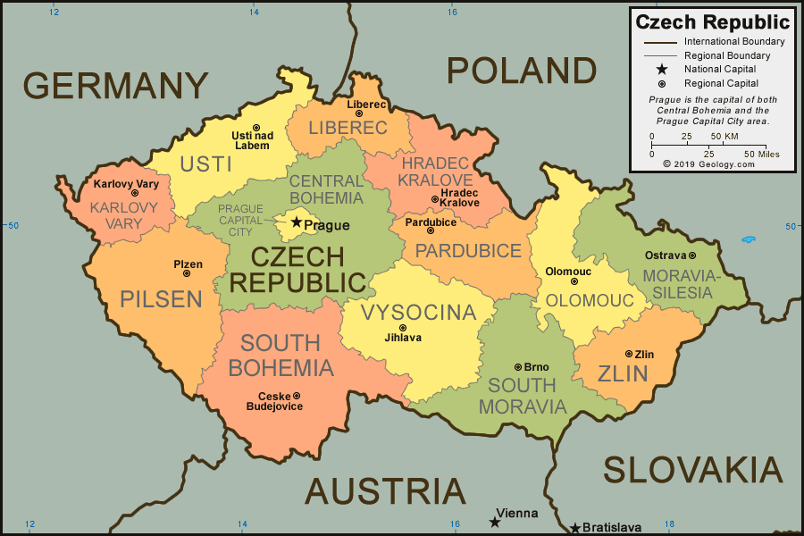

Tagasi
Tšehhi ehk Tšehhimaa (tšehhi keeles Česko; enamasti kasutatakse nimekuju Česká republika) on merepiirita riik Kesk-Euroopas (teise liigituse järgi Ida-Euroopas).
Asustatud -- 1. jaanuaril 1993
Pealinn-Praha/Brno
Keel -- tsehhi keel
Rahva arv -- 10 909 500
Linnad mida olen külastanud: Praha
Mida olen saavutanud selle reismisega:
Ajalugu õppinud:✅
Kohaliku toitu proovinud:❌
Kohaliku elamust proovinud:❌
